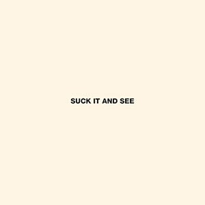

Discography
Albums
-
Whatever People Say I Am, That's What I'm Not - 23 January 2006
Whatever People Say I Am, That's What I'm Not is the debut studio album by the English rock band Arctic Monkeys, released on 23 January 2006. The album surpassed Elastica's self-titled album to become the fastest selling debut album in British music history, shifting over 360,000 copies in its first week, and remains the fastest selling debut album by a band. It has since gone quintuple platinum in the UK.
-
Favourite Worst Nightmare - 18 April 2007
Favourite Worst Nightmare is the second studio album by the English indie rock band Arctic Monkeys that was first released in Japan on 18 April 2007 before being released around the world. Recorded in east London's Miloco Studios with producers James Ford and Mike Crossey, the album was preceded by the release of "Brianstorm" on 16 April 2007.
-
Humbug - 19 August 2009
Humbug is the third studio album by the English indie rock band Arctic Monkeys, first released on 19 August 2009 by Domino Records. The band started to write songs for the album towards the end of summer 2008, and finished it entirely on spring 2009.
-
Suck It and See - June 2011
Suck It and See is the fourth studio album by the English indie rock band Arctic Monkeys, released in June 2011 on Domino. The album was produced by the band's longtime collaborator, James Ford at Sound City Studios, Los Angeles, with both he and, drummer, Matt Helders promising to deliver a more "instant", "poppy" and "vintage" sound in comparison to the band's darker, polarising previous album, Humbug.
-
AM - 9 September 2013

AM is the fifth studio album by the English indie rock band Arctic Monkeys. It was produced by James Ford and co-produced by Ross Orton at Sage & Sound Recording in Los Angeles and Rancho De La Luna in Joshua Tree, California,[6] and released in September 2013 through Domino. The album was promoted by the singles "R U Mine?", "Do I Wanna Know?", "Why'd You Only Call Me When You're High?", "One for the Road", "Arabella", and "Snap Out of It". It features guest appearances by Josh Homme, Bill Ryder-Jones, and Pete Thomas.
Tracks
Whatever People Say I Am, That's What I'm Not
- "The View from the Afternoon" - 3:38
- "I Bet You Look Good on the Dancefloor" - 2:53
- "Fake Tales of San Francisco" - 2:57
- "Dancing Shoes" - 2:21
- "You Probably Couldn't See for the Lights But You Were Staring Straight at Me" - 2:10
- "Still Take You Home" - 2:53
- "Riot Van" - 2:14
- "Red Light Indicates Doors Are Secured" - 2:23
- "Mardy Bum" - 2:55
- "Perhaps Vampires is a Bit Strong But..." - 4:28
- "When the Sun Goes Down" - 3:20
- "From the Ritz to the Rubble" - 3:13
- "A Certain Romance" - 5:31
Favourite Worst Nightmare
- "Brianstorm" - 2:50
- "Teddy Picker" - 2:43
- "D Is for Dangerous" - 2:16
- "Balaclava" - 2:49
- "Fluorescent Adolescent" - 2:57
- "Only Ones Who Know" - 3:02
- "Do Me a Favour" - 3:27
- "This House Is a Circus" - 3:09
- "If You Were There, Beware" - 4:34
- "The Bad Thing" - 2:23
- "Old Yellow Bricks" - 3:11
- "505" - 4:13
Humbug
- "My Propeller" - 3:27
- "Crying Lightning" - 3:43
- "Dangerous Animals" - 3:30
- "Secret Door" - 3:43
- "Potion Approaching" - 3:32
- "Fire and the Thud" - 3:57
- "Cornerstone" - 3:18
- "Dance Little Liar" - 4:43
- "Pretty Visitors" - 3:40
- "The Jeweller's Hands" - 5:42
Suck It and See
- "She's Thunderstorms" - 3:55
- "Black Treacle" - 3:35
- "Brick by Brick" - 2:59
- "The Hellcat Spangled Shalalala" - 3:00
- "Don't Sit Down 'Cause I've Moved Your Chair" - 3:04
- "Library Pictures" - 2:22
- "All My Own Stunts" - 3:52
- "Reckless Serenade" - 2:43
- "Piledriver Waltz" - 3:24
- "Love is a Laserquest" - 3:12
- "Suck It and See" - 3:46
- "That's Where You're Wrong" - 4:17
AM
- "Do I Wanna Know?" - 4:32
- "R U Mine?" - 3:20
- "One for the Road" - 3:26
- "Arabella" - 3:27
- "I Want It All" - 3:04
- "No.1 Party Anthem" - 4:03
- "Mad Sounds" - 3:35
- "Fireside" - 3:01
- "Why'd You Only Call Me When You're High?" - 2:42
- "Snap Out of It" - 3:12
- "Knee Socks" - 4:17
- "I Wanna Be Yours" - 3:04